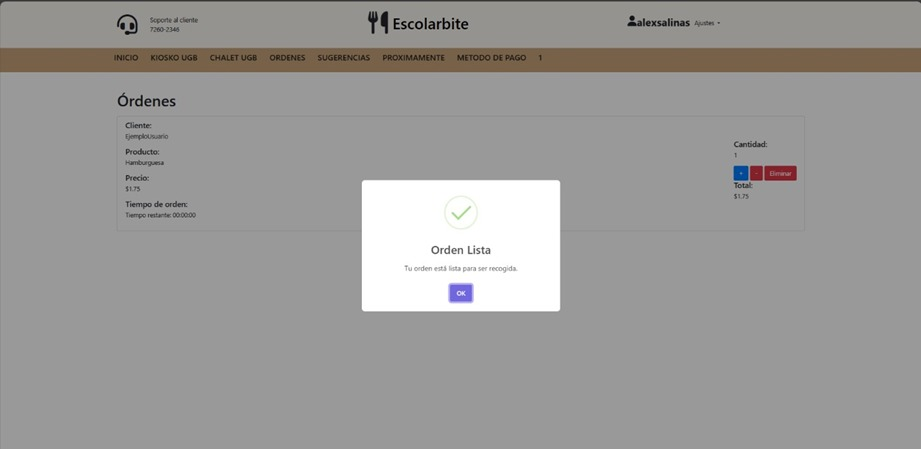
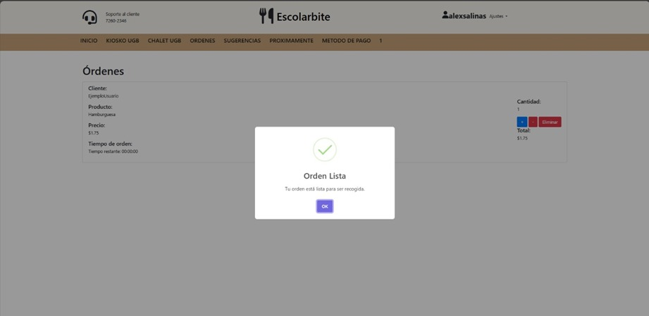
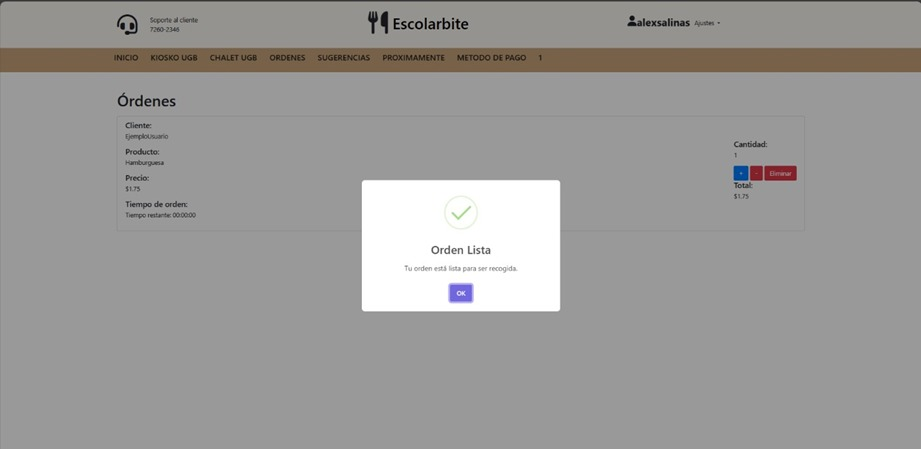
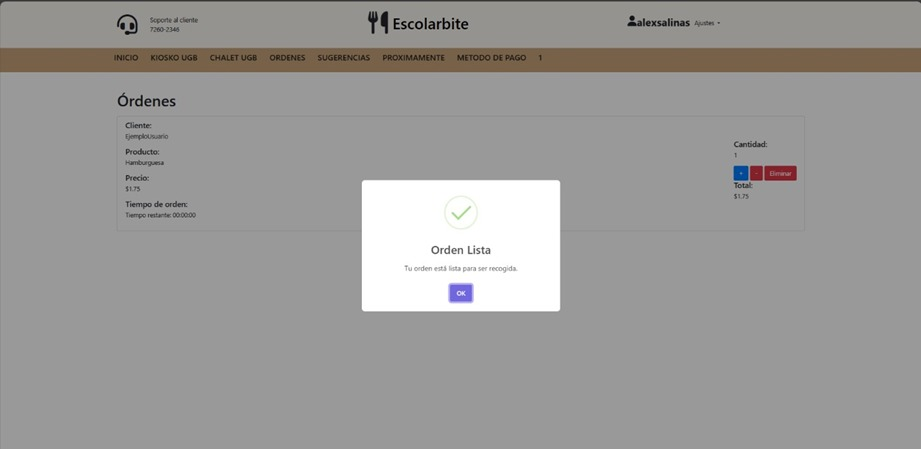

Mi nombre es José Alexander Salinas Lobos. Soy estudiante de Ingeniería en Sistemas y Redes Informáticas en la Universidad Gerardo Barrios, actualmente cursando el séptimo ciclo. A lo largo de mi carrera académica, he adquirido conocimientos sólidos, destacando en áreas como bases de datos y redes, con certificación en CCNA1, y desarrollo de front-end. Cuento con conocimientos en tecnologías como HTML5, Bootstrap, CSS, JavaScript, Vue, Node, MongoDB, MariaDB, MySQL, PHP. Mi formación incluye la participación en proyectos de desarrollo como Norris y EscolarBite, que han enriquecido mi experiencia y han permitido la aplicación efectiva de mis conocimientos teóricos. Como estudiante comprometido, he desarrollado habilidades blandas como la comunicación efectiva, el trabajo en equipo y la resolución de problemas. Mi enfoque colaborativo y mi capacidad para adaptarme a entornos dinámicos me permiten contribuir de manera significativa a equipos multidisciplinarios. La ética, la responsabilidad y la búsqueda constante de la excelencia son fundamentales en mi enfoque profesional. Valorizo la honestidad, la integridad y la capacidad de aprendizaje continuo como pilares para un crecimiento sostenible en el campo de la tecnología.


Norris es un proyecto educativo diseñado para funcionar como un asistente virtual especializado en apoyar a pacientes con EPOC. Sus objetivos principales son: proporcionar un sistema para el registro de síntomas y signos vitales,facilitar la comunicación directa entre médicos y pacientes mediante un chat que conserva un historial de conversaciones,generar estadísticas relevantes para el seguimiento de la enfermedad,ofrecer un blog informativo sobre la EPOC.
Dentro del proyecto Norris, mi rol fue focalizado en dos áreas principales como lo es el testing el cual consistio en asegurarme de que todas las funcionalidades cumplían con los requisitos establecidos y funcionaban correctamente bajo diferentes escenarios y Desarrollo de Front-end, el cual trabajé en la creación de interfaces de usuario utilizando HTML, CSS, JavaScript, Bootstrap y Vue. Mi objetivo era asegurar una experiencia de usuario fluida y accesible.
El desarrollo de Norris implicó la integración de varias tecnologías y la colaboración de un equipo multidisciplinario. Se utilizaron marcos de trabajo y lenguajes de programación modernos para crear una interfaz accesible y funcional. El proceso incluyó varias fases de desarrollo, desde la planificación y diseño hasta la implementación y el testing.
Laravel,utilizado para el backend. MySQL y MongoDB, para la gestión de bases de datos. CSS, JavaScript, PHP, HTML, para el desarrollo del frontend. Bootstrap y Vue, frameworks utilizados para el diseño responsive y la interactividad del frontend. API de OpenAI, integrada para potenciar el asistente virtual inteligente.
 

El proyecto EscolarBite tiene como objetivo principal transformar y optimizar la experiencia de pedido de alimentos en los cafetines de la Universidad Gerardo Barrios (UGB). Se busca facilitar a los estudiantes el acceso a diversas opciones de menús, permitir la personalización de pedidos según sus preferencias y habilitar la realización de solicitudes de forma online. Además, el proyecto pretende mejorar la eficiencia del proceso de pedido y ofrecer a los estudiantes la capacidad de monitorear el tiempo estimado de preparación de sus órdenes y recibir notificaciones cuando estén listas para ser recogidas.
Dentro del proyecto EscolarBite, desempeñé el rol de desarrollador front-end. Mis responsabilidades incluyeron contribuir a la creación de una experiencia de usuario atractiva y funcional. Esto implicó trabajar en el diseño de la interfaz, asegurar la usabilidad del sitio web en diferentes dispositivos y navegadores, y la implementación de interacciones dinámicas en la página web.
El proceso de trabajo en el desarrollo de EscolarBite incluyó el diseño e implementación de una interfaz web amigable e intuitiva que permite a los usuarios explorar menús, personalizar pedidos y hacer solicitudes en línea. Este proceso implicó una planificación cuidadosa de las funcionalidades deseadas, el diseño de la interfaz de usuario y la implementación técnica utilizando diversas tecnologías web.
Para el desarrollo de EscolarBite se utilizaron varios lenguajes de programación y tecnologías web, incluyendo PHP para el backend, HTML5 y CSS para la estructura y estilo de la página, respectivamente. Además, se utilizó Bootstrap JS para facilitar el diseño responsivo y SweetAlert2 para la creación de alertas y notificaciones más estéticas y funcionales.


 
